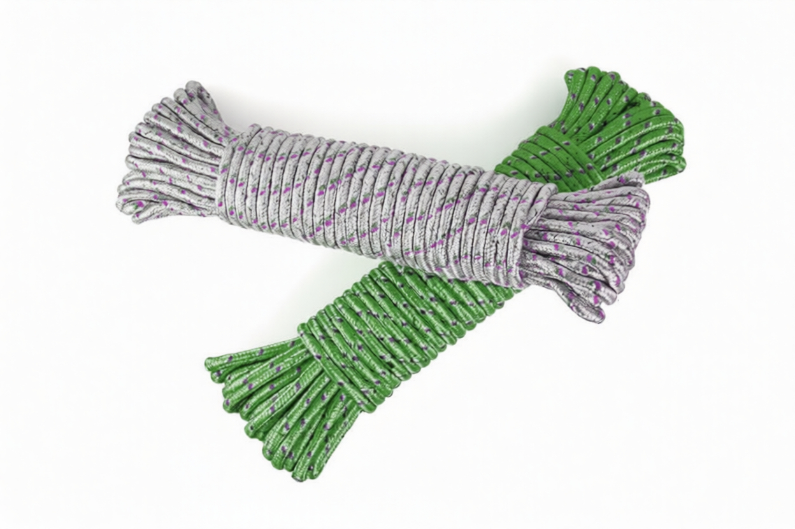
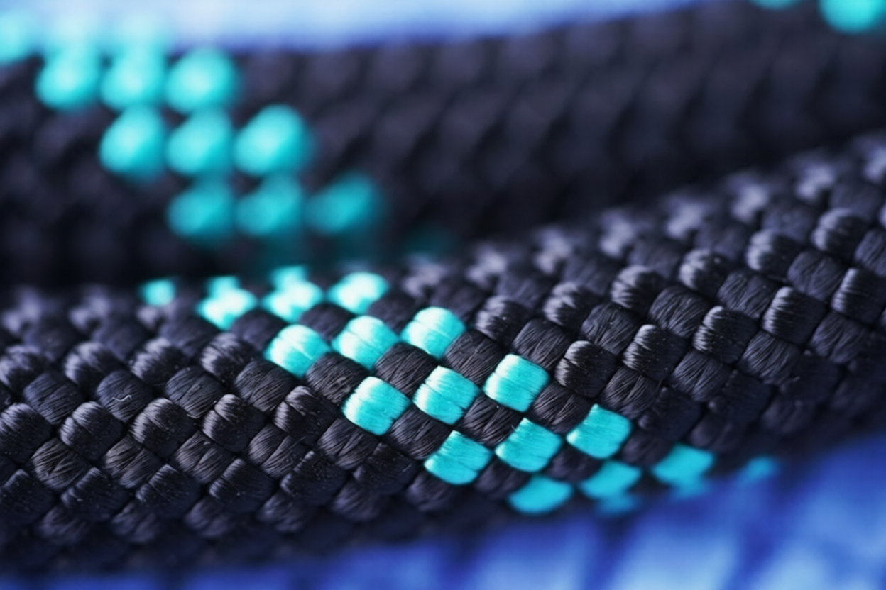
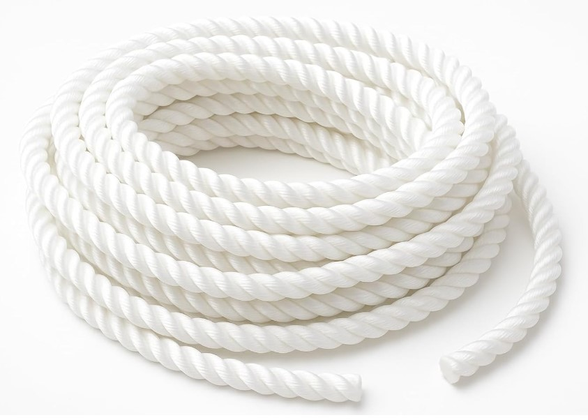
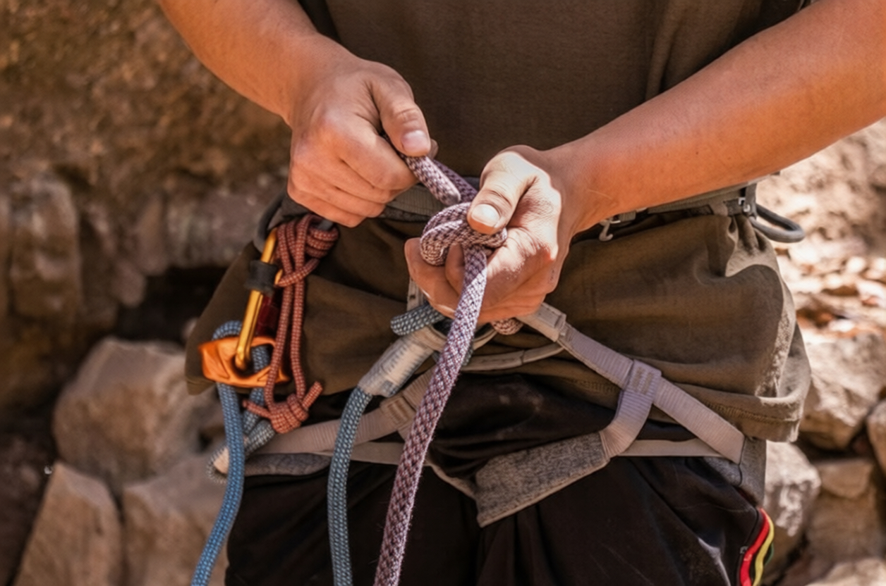
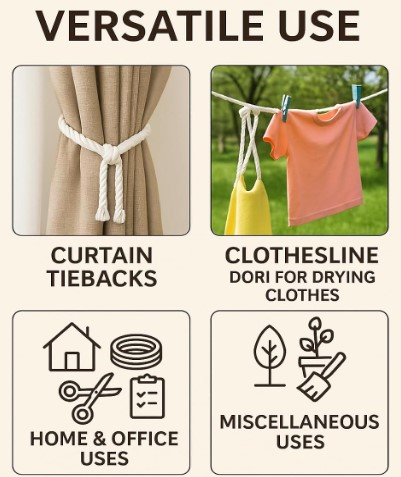

Strong and flexible nylon ropes designed for demanding industrial, marine, and general-purpose applications.






Nylon Ropes are known for their high strength, elasticity, and durability, making them suitable for applications that require reliable load handling and shock absorption.
These ropes are manufactured from premium nylon fibers, offering excellent resistance to abrasion, moisture, and environmental stress.
For Indian operating conditions, nylon ropes are recommended where sudden load variations or jerks are expected. Correct diameter selection based on working load is essential for safe and long-term usage.